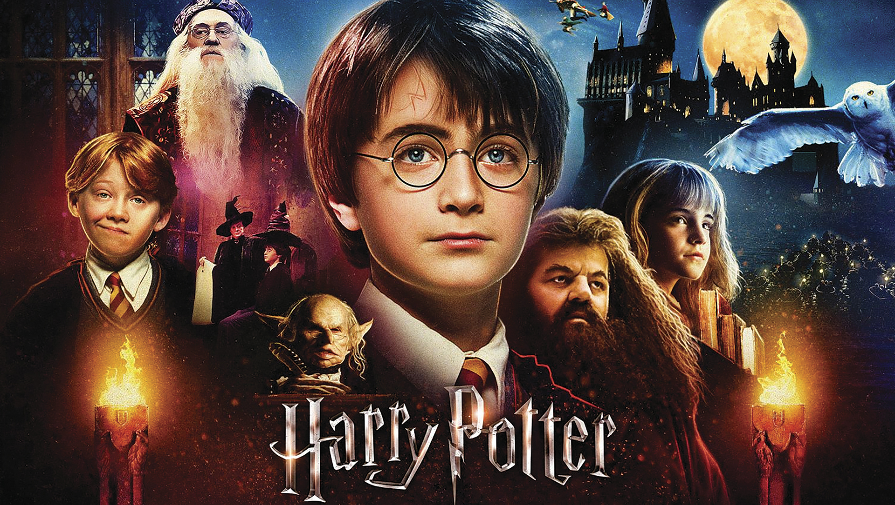
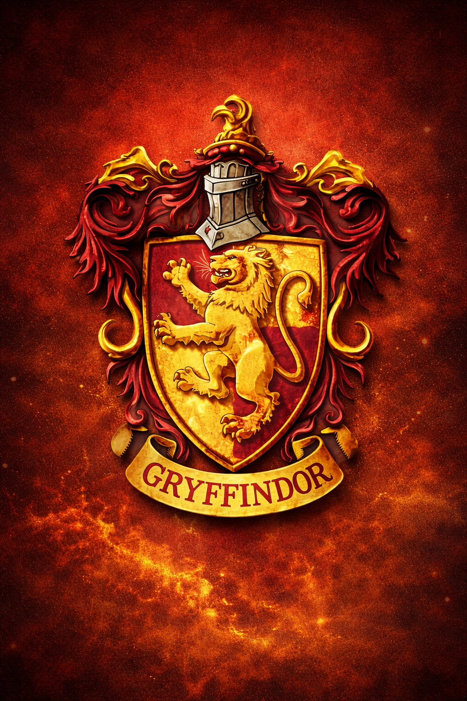
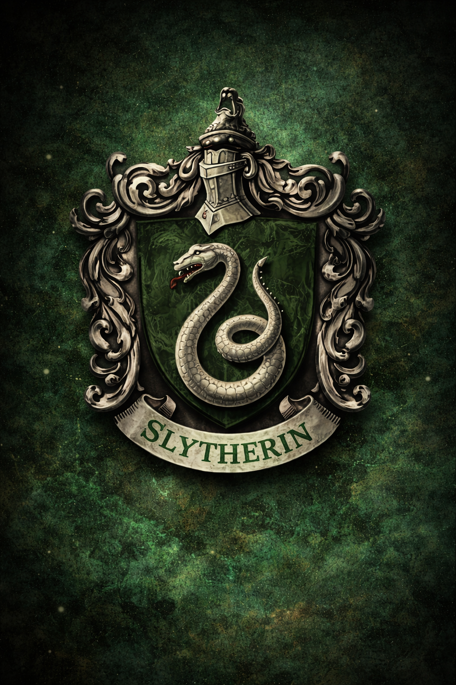
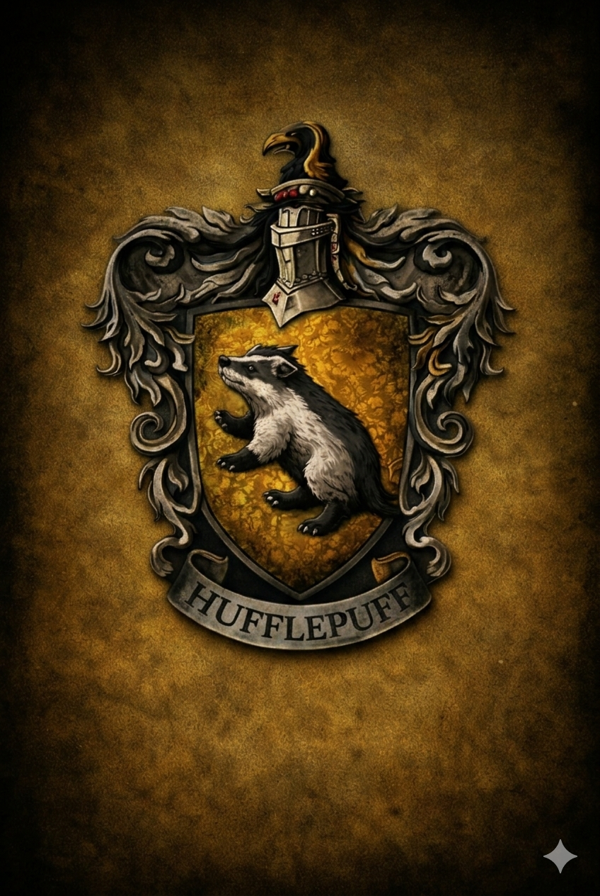
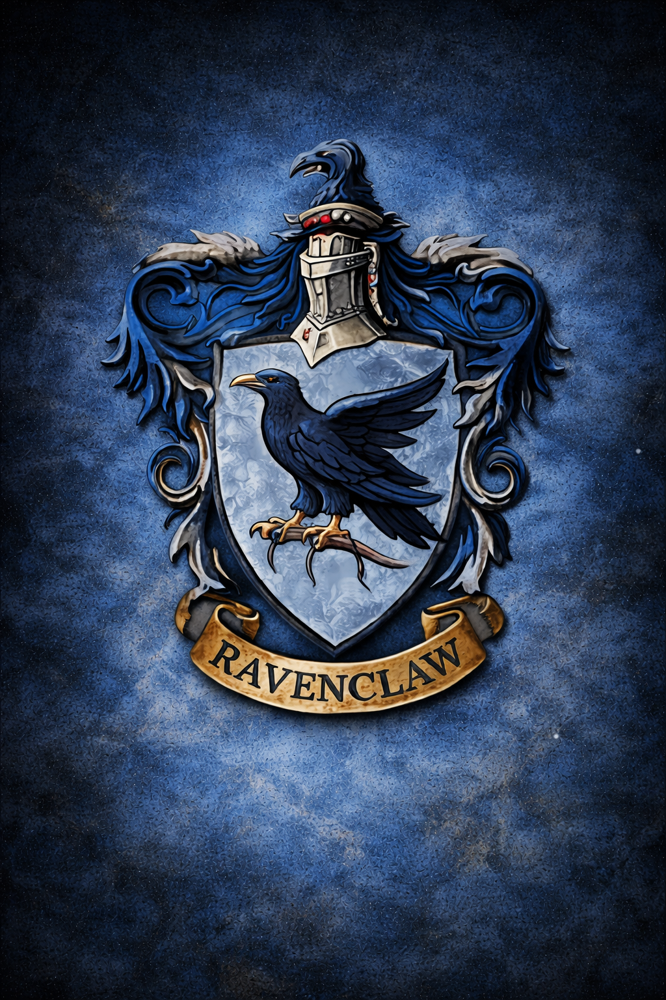
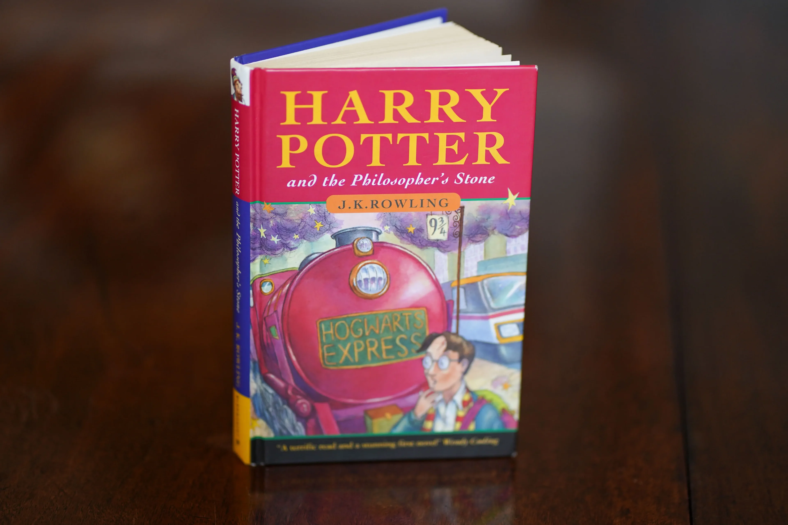

"Hermione Granger"
-Emma Watson"Harry Potter"
Daniel Radcliffe"Rony Wesley"
Rupert Grint"Albus Dumbledore"
Michael Gambon"Lord Voldemort"
Richard Bremmer"Hermione Granger"
-Emma Watson"Harry Potter"
Daniel Radcliffe"Rony Wesley"
Rupert Grint"Albus Dumbledore"
Michael Gambon"Lord Voldemort"
Richard BremmerHarry Potter: A Saga que Conquistou o Mundo

Harry Potter surgiu em 1997, quando a escritora J. K. Rowling publicou o primeiro livro da série, Harry Potter and the Philosopher's Stone. A história acompanha um jovem garoto que descobre ser um bruxo e passa a estudar na famosa escola de magia Hogwarts. A partir desse momento, Harry entra em um mundo cheio de magia, criaturas fantásticas e grandes desafios, enquanto aprende sobre amizade, coragem e o valor de lutar pelo que é certo.
O universo criado por Rowling conquistou leitores de todas as idades graças à sua narrativa envolvente e personagens cativantes. Com o tempo, a saga se transformou em um fenômeno mundial, vendendo centenas de milhões de livros e sendo adaptada para uma série de filmes de enorme sucesso pela Warner Bros..
Mais do que apenas uma história de fantasia, Harry Potter se tornou um marco cultural que influenciou gerações de leitores e fãs ao redor do mundo, consolidando-se como uma das franquias mais populares da história da literatura e do cinema.
Qual é a sua casa em hogwarts?
Em Hogwarts, sua casa é mais do que um dormitório; é sua família e o reflexo da sua essência. O Chapéu Seletor não analisa apenas seus poderes, mas o que você carrega no coração. Grifinória (Gryffindor): Onde habitam os de coração indômito. Seus membros são conhecidos pela coragem, bravura e determinação, prontos para lutar pelo que é certo, não importa o perigo. Sonserina (Slytherin): Para os astutos que usam qualquer meio para atingir seus fins. Valoriza a ambição, a liderança e a preservação do próprio legado, abrigando bruxos que buscam a grandeza acima de tudo. Corvinal (Ravenclaw): O refúgio dos que possuem a mente alerta. Aqui, o aprendizado e a sabedoria são os maiores tesouros, e o espírito de inteligência e criatividade define cada aluno. Lufa-Lufa (Hufflepuff): Onde a lealdade e a paciência prevalecem. É a casa dos justos e trabalhadores, que acreditam que o valor de um bruxo está na sua bondade e na força de suas amizades.

Grifinoria
Um pouco sobre a grifinoria...
Ver sobre casa
Sonserina
Um pouco sobre a sonserina...
Ver sobre casa
Lufa-Lufa
Um pouco sobre a lufa Lufa...
Ver sobre casa
Corvinal
Um pouco sobre a corvinal...
Ver sobre casaPersonagens da Saga
A saga Harry Potter apresenta personagens marcantes que ajudam a construir a história do mundo mágico. Entre heróis corajosos, amigos leais e poderosos bruxos, cada personagem possui um papel importante na luta entre o bem e o mal, tornando a jornada ainda mais emocionante.
Personagens
Clique nas imagens para saber mais sobre os bruxos


Hogwarts: Uma História Através dos Filmes
A saga Harry Potter também ganhou vida nas telas de cinema, conquistando milhões de fãs ao redor do mundo. Os filmes acompanham a jornada de Harry e seus amigos em Hogwarts, mostrando o crescimento dos personagens, os desafios enfrentados e a luta contra as forças das trevas lideradas por Voldemort. Cada filme expande o universo mágico criado por J.K. Rowling e marcou uma geração de espectadores.
A Mente por Trás da Magia: J.K. Rowling
A série Harry Potter foi criada pela escritora britânica J. K. Rowling, que imaginou um universo mágico repleto de escolas de magia, criaturas fantásticas e batalhas entre o bem e o mal. A ideia para a história surgiu nos anos 1990, durante uma viagem de trem, quando Rowling começou a imaginar um jovem bruxo que descobria seu verdadeiro destino. Após enfrentar diversas dificuldades e ter o manuscrito rejeitado por várias editoras, seu primeiro livro, Harry Potter and the Philosopher's Stone, foi finalmente publicado em 1997. A obra rapidamente conquistou leitores ao redor do mundo graças à sua narrativa envolvente, personagens marcantes e à forma como mistura aventura, amizade e mistério. Com o sucesso do primeiro livro, a história continuou em mais seis volumes, acompanhando o crescimento de Harry Potter e seus amigos na Escola de Magia e Bruxaria de Hogwarts, enquanto enfrentam desafios cada vez maiores e a ameaça do poderoso bruxo das trevas Voldemort.
